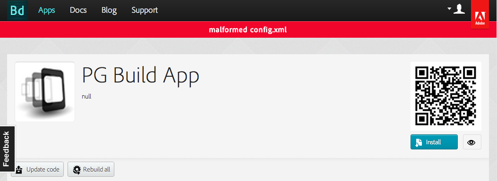
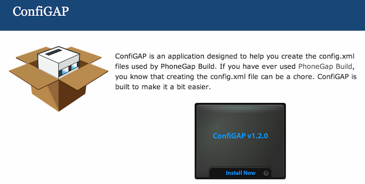
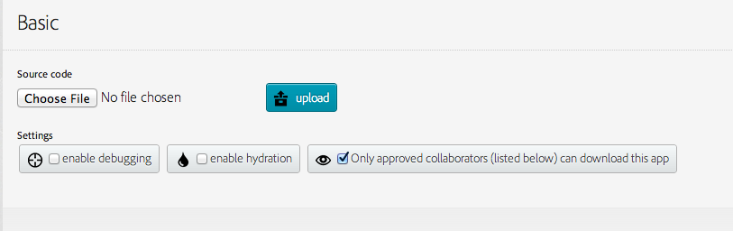
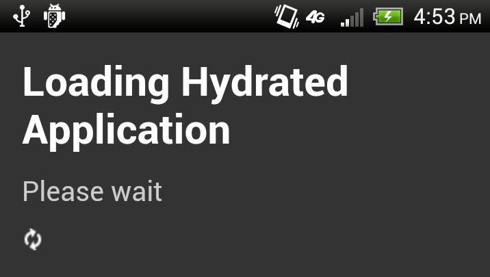
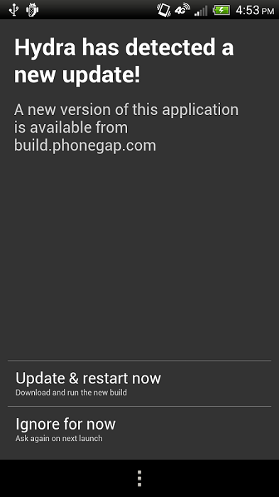

Introduction to PhoneGap
Making native-only devs jealous since 2009
Presented by Raymond Camden / @cfjedimaster
Who am I?
- Raymond Camden
- Developer Evangelist for Adobe
- Web Standards, HTML5, JavaScript, ColdFusion
- Blogging at raymondcamden.com
- Tweeting at @cfjedimaster

Gratuitous Pictures of My Kids
Rough Agenda
- Writing PhoneGap Apps
- Using PhoneGap Build
- "Stuff"
Slide Deck + Assets
https://github.com/cfjedimaster/Introduction-to-PhoneGap

Genesis
- Built at an iPhoneDevCamp in 2009
- Started by Nitobi
- Adobe bought Nitobi (2011)
- Currently, as of this morning, version 2.7.0
$$$?
- PhoneGap is free
- No, really, free
- Open Source
Apache Cordova
- cordova.apache.org
- PhoneGap is Adobe's implementation
- PhoneGap == Cordova
Let's get techy
- Creates "Hybrid" applications
- Native wrapper around a web view
- You code in HTML, JavaScript, and CSS
- PhoneGap "bridges the gap" to native capabilities
About that gap...
- PhoneGap tries to follow standards
- When it doesn't need to do anything, it doesn't
- In the perfect world, PhoneGap won't exist
Supported Platforms
- iOS
- Android
- Windows Phone 7/8 (+ Windows 8)
- BlackBerry
- Bada
- WebOS
- Symbian
Features
- Accelerometer - when the device moves
- Camera - pictures of your cat
- Capture - audio, video, stills of your cat
- Compass - for when you're lost in the woods
- Connection - type of connection
Features
- Contacts - find and create new friends
- Device - device and OS version metadata
- Events - various app/hardware related events
- File - native file system access (+ upload)
- Geolocation - for when you're lost in the woods
Features
- Globalization - date/number/currency formatting
- Media - related to audio playback (supports record as well)
- Notification - visual, audible, and tactile notifications
- Splashscreen - for your splash screen needs
- Storage - Mini database
Unofficial Features
- Use any of the 10 million JavaScript libraries
- Use any of the 10 million APIs
- Deploy to app store
Non-Features
- UI
- Convert your ColdFusion/PHP/Perl CGI site to native
- Native Killer
Who is using PhoneGap?

Real World Demo
How is it done?
- Going from HTML to Binary
- Making use of the awesome
How is it done? (Option 1)
- Get SDK(s) + Cordova download
- Command line init
- Switch to the editor for that platform
- Edit HTML, simulate, build
Demo
How is it done? (Option 2)
- cordova-client
- Node tool
- "Meta Tool"
- Still requires SDKs
- All command line
(Not official!)- Added to PhoneGap 2.4.0
Demo
How is it done? (Option 3)

How do we do the awesome?
- Include cordova-VERSION.js
- Only does what it has to...
- config.xml (but we'll worry about that later)
- plugins (but we'll worry about that later)
Demo
Ray, show the camera app...
Real World Building
- Desktop Browser
- Mobile via Web
- Ripple Emulator
- Local SDK to Simulator/Device
Desktop Browser
- Pro: Super Fast
- Pro: No setup
- Pro: Debugging Rocks
- Con: UI isn't right
- Con: UX isn't right
- Con: Features missing
- Con: Security restrictions
Mobile Via Web
- Pro: Kinda Fast
- Pro: Minimal setup
- Pro: UI and UX testing
- Con: Features missing
- Con: Security restrictions
- Con: Debugging (kinda) sucks
Ripple Emulator
- Pro: Fast
- Pro: Similar UI
- Pro: Free
- Pro: Security restrictions gone
- Con: Doesn't support 100% of the PhoneGap APIs
- Con: Still not on the device
To Install
- Go to the Chrome Web Store: https://chrome.google.com/webstore/category/home
- Search for "ripple"
- click Extensions

Demo
Ray, hit any page, like my blog
Local SDK to Simulator/Device
- Pro: The Real Deal
- Con: Slow(ish)
- Con: Not Free
- Con: Debugging can suck
TO BE CLEAR: YOU MUST ALWAYS TEST ON A REAL DEVICE
Demos
- device api
- accelerometer api
- connection api
- coldfusion
- color thief
PhoneGap Build
The 411
- Web based platform to do builds
- Supports iOS, Android, Windows Phone, Blackberry, webOS, Symbian
- Has an API too
- NO SDKS NO COMPILING NO MESS!
$$$

Demo
What You Will Screw Up!
You reference cordova.js or phonegap.js in your HTML, but don't include it.
config.xml
- Used to - wait for it - configure stuff
- Based on a W3C Spec (Widget Spec)
- Must be at the top level (same as index.html)
- No validator* - so get it right
config.xml - validation
Ripple will do some validation (missing top level widget, bad xml)
Ripple Demo
config.xml - basics
<?xml version="1.0" encoding="UTF-8" ?>
<widget xmlns = "http://www.w3.org/ns/widgets"
xmlns:gap = "http://phonegap.com/ns/1.0"
id = "com.phonegap.example"
versionCode="10"
version = "1.0.0">
</widget>
- id is reverse-domain style
- versionCode is Android only (Doc)
config.xml - basics (2)
<?xml version="1.0" encoding="UTF-8" ?>
<widget xmlns = "http://www.w3.org/ns/widgets"
xmlns:gap = "http://phonegap.com/ns/1.0"
id = "com.phonegap.example"
versionCode="10"
version = "1.0.0">
<name>My Cool App</name>
<description>Like Angry Birds, but with Ninjas</description>
</widget>
config.xml - <preference>
- All use a name/value syntax
- <preference name="something" value="foo">
- Fall into cross platform, Android, iOS, and Blackberry categories
config.xml - <preference> (2)
- phonegap-version: From 1.1.0 to 2.5.0 (default)
- fullscreen: False is default, supports iOS and Android
- webviewbounce: True is default, iOS only
- detect-data-types: Should text in the form of phone numbers, dates, be recognized. iOS only, defaults to true
- android-min(max)SdkVersion: Min (and max) SDK versions, Android only
Demo
Show fullscreen and nonfullscreen
config.xml - icons
- You can specify a default icon, but must be in your root folder and must be named icon.png
- You can then specify platform/type icons
config.xml - icons (Example)
<!-- default fallback -->
<icon src="icon.png" />
<!-- classic -->
<icon src="icons/ios/icon.png" gap:platform="ios" width="57" height="57" />
<!-- retina -->
<icon src="icons/ios/icon-72.png" gap:platform="ios" width="72" height="72" />
<!-- ipad -->
<icon src="icons/ios/icon_at_2x.png" gap:platform="ios" width="114" height="114" />
<icon src="icons/android/ldpi.png" gap:platform="android" gap:density="ldpi" />
<icon src="icons/android/mdpi.png" gap:platform="android" gap:density="mdpi" />
<icon src="icons/android/hdpi.png" gap:platform="android" gap:density="hdpi" />
<icon src="icons/android/xhdpi.png" gap:platform="android" gap:density="xhdpi" />
<icon src="icons/winphone/icon.png" gap:platform="winphone" />
<!-- This one is for the tile -->
<icon src="icons/winphone/tileicon.png" gap:platform="winphone" gap:role="background" />
Demo
Show ICON Test
config.xml - splashscreen
- Like with icon, can support fallback
- Like with icon, can support platform/type
config.xml - splashscreen (Example)
<!-- default fallback -->
<gap:splash src="splash.png" />
<gap:splash src="splash/ios/Default.png" width="320" height="480" />
<gap:splash src="splash/ios/Default_at_2x.png" width="640" height="960" />
<gap:splash src="splash/android/ldpi.png" gap:platform="android" gap:density="ldpi" />
<gap:splash src="splash/android/mdpi.png" gap:platform="android" gap:density="mdpi" />
<gap:splash src="splash/winphone/splash.jpg" gap:platform="winphone" />
Demo
Show splashscreen and splashscreenlonger
config.xml - features
- Android only
- Specifies what permissions your application needs
- Minimum permissions required is INTERNET
- Don't ignore this!
config.xml - features (Example)
<!-- min -->
<preference name="permissions" value="none"/>
<!-- to enable individual permissions use the following examples -->
<feature name="http://api.phonegap.com/1.0/battery"/>
<feature name="http://api.phonegap.com/1.0/camera"/>
<feature name="http://api.phonegap.com/1.0/contacts"/>
<feature name="http://api.phonegap.com/1.0/file"/>
<feature name="http://api.phonegap.com/1.0/geolocation"/>
<feature name="http://api.phonegap.com/1.0/media"/>
<feature name="http://api.phonegap.com/1.0/network"/>
<feature name="http://api.phonegap.com/1.0/notification"/>
Demo
Show ugly Android demo
config.xml - Access
- If blank, nothing remote is allowed
- Can specify a domain and optionally if subdomains are allowed
- You can also prevent remote resources from taking over the complete app
- Defaults are .... tricky
config.xml - Access
- What happens when you click a link?
- On Android, if whitelisted, takes over webview, otherwise opens a browser
- On iOS, if whitelisted, a regular link takes over webview, one with target="_blank" opens in browser. If NOT whitelisted, it is blocked
- For more info: https://build.phonegap.com/blog/access-tags
- Remember the InAppBrowser feature
ConfiGAP
http://aj-software.com/configap/
Hydration

Hydration
- Improves compilation speed
- Creates an automatic updater
- Coolest thing ever invented anywhere (honest!)
Hydration
Hydration
Hydration
Demo
API
- Full API. Everything you can do on the site, you can do here
- Authentication over Basic Authentication or via token authentication
- All responses are JSON strings or binary data
- JSON/P supported as well
- Attempts to follow HATEOAS (Hypermedia as the Engine of Application State)
API - Libraries
- Node - https://github.com/mwbrooks/phonegap-build-api-js
- Node - Mine - Because - http://www.raymondcamden.com/index.cfm/2012/8/31/A-PhoneGap-Build-API-wrapper-in-Node
- PHP - https://github.com/avtehnik/phonegap-build-php-api
Demo
Tooling
- Brackets + Edge Code
- Dreamweaver
Demo
autobuild.monkeh.me
- Free service
- Add a web service hook to Git
- When you commit, it auto updates
Demo
Plugins
Plugins
- Written in their native language (that follows an API)
- Ship with a JavaScript wrapper
- Include them in your project
Examples
- TTS
- Barcode scanner
- SMS
- Intents
- Push Notifications
Child Browser
PhoneGap Build Support
- ChildBrowser (but don't use it)
- Barcode Scanner
- Analytics
- Generic Push
- Facebook Connect
Example
Debugging
Your options
- Stick to the desktop
- Remote debugging (mobile web, Chrome/Safari)
- console.log - for objects, do: console.log(JSON.stringify(x))
- Yeah, seriously
Desktop?
- Remember - you can't only use this
- Dev Tools are Amazing.
- Sync to Mobile tools.
Warning - Marketing Ahead
Edge Inspect
Edge Inspect - Components
- An application (Windows/OSX)
- A Chrome plugin
- A mobile app (Android/iOS)
Edge Inspect - Features
- Synchronized Browsing
- Remote Inspection
- Screenshots
Demo
Remote Debugging
- Browser to Device
- iOS and Android only
Remote Debugging
iOS Demo
Remote Debugging w/ Chrome+Android
Remote Debugging w/ Chrome+Android
- This is NOT the Android browser
- This is Chrome only
- Safari is 59.42%, Android is 22.89%, Chrome is 2.63%
Details
- Requires the Android SDK
- Device needs USB Debugging enabled
- Device needs USB Web Debugging (Chrome Setting)
- But wait - there's more!
Run this...
adb forward tcp:9222 localabstract:chrome_devtools_remote
The Final Step
- Open Chrome on Desktop
- Navigate to localhost:9222
UI
Many Options
- Pick a framework: jQuery Mobile, Bootstrap, Topcoat
- "Do it yourself"
- As of this morning, Pure (http://purecss.io/)
jQuery Mobile
- Takes a "I'll just make everything pretty for you" approach
- Multiple UI widgets (responsive tables, panels, custom drop downs, etc)
- Has a standard "look" to it
- Very easy to pick up - works with HTML, not JavaScript
- http://jquerymobile.com
jQuery Mobile Demo

Bootstrap
- Responsive layout
- http://twitter.github.io/bootstrap/
Bootstrap Demo
Topcoat
- "CSS for clean and fast web apps"
- One file for desktop, one for mobile
- Adobe open source project
- http://topcoat.io/
Topcoat Demo
Performance!
Some tips
- click versus touch
- Remote data via AJAX isn't magically slender
- Perception is everything (demo)
- Cache static data (demo)
- Cache dynamic data
Some more tips
- Check your JavaScript framework
- Learn CSS performance (hardware acceleration)
- Learn from the past
Additional Performance Resources
- Christophe Coenraets: http://coenraets.org/blog/2013/05/top-10-performance-techniques-for-phonegap-applications/
- Brock Whitten: http://sintaxi.com/you-half-assed-it
If we have time...
Converting a Dynamic Site to PhoneGap
- To be clear, you can't run PHP / CF / ASP / Ruby / Assembly / Etc on a device
- Your backend server turns into an API provider (JIJO)
Single Page Architecture
- What: A web site/app that is contained within one core page - additional content (data/text/etc) loaded into the DOM
- Why: deviceready is needed for every new HTML reload
- How: Numerous ways!
SPA Examples
- jQuery Mobile
- Backbone
- Angular
- and about 5000 other JS frameworks
Think Different
You're building a web app, not a web page.
Where next?
- Active, and helpful, Google group
- Multiple books